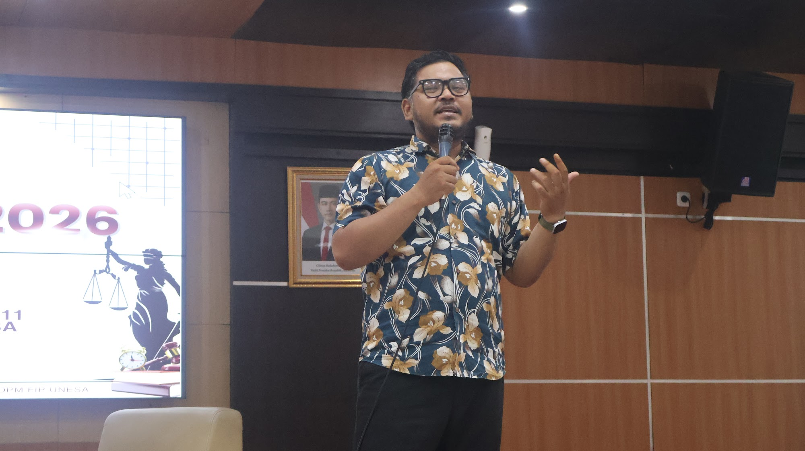

oleh : Nasfa Uuth Akhmadie (Staf Khusus Ketua DPRD Provinsi Jawa Timur)
Panggung politik lama memuja politisi vokal yang berjalan sendirian bak pahlawan tunggal, dan bersama mahasiswa Kampus UNESA 5 Magetan dalam Pelatihan Legislatif 2026, ilusi semacam itu layak dibongkar sampai akarnya. Hukum dan suara akan lumpuh tanpa tindakan kolektif. Krisis demokrasi kita hari ini lahir dari matinya kolegialitas dan kaburnya batas etika kewenangan, bukan dari kurangnya pengkritik lantang.
Tema besar tentang IUS, VOX, LEGISLATIO ACTIO: PRO FUTURO, mengarahkan pikiran pada satu ironi yang jarang dibahas. Ius berarti hukum, vox berarti suara, dan actio berarti tindakan. Dua kata pertama sudah terlalu sering terdengar di ruang kuliah, mimbar seminar, sampai obrolan warung kopi yang berlangsung tengah malam. Kata ketiga hampir tidak pernah dibahas dengan jujur, padahal di titik itulah seluruh teori politik diuji oleh kenyataan yang tidak pernah sopan.
Di hadapan mahasiswa yang sedang belajar menjadi pembuat aturan sekaligus pengawas kebijakan, ada kritik yang perlu disampaikan terbuka tanpa pembungkus. Di atas kertas, menyandang dua peran itu sekaligus terdengar gagah dan mudah diucapkan, tetapi begitu turun ke lapangan, dua peran itu sering saling memakan dan menjatuhkan satu sama lain. Penyebabnya hanya satu, yaitu budaya politik kita yang sedang terjangkit narsisme individual. Banyak aktivis kampus dan politisi parlemen mengira legislator hebat adalah sosok yang paling keras berteriak di depan mikrofon, berjalan sendirian membawa bendera ego, dan merasa dirinya menjadi satu-satunya pusat kebenaran moral di atas bumi ini.
Patologi itu paling sering meledak di ruang rapat, baik di tingkat DPM kampus maupun di gedung DPRD yang berpendingin ruangan. Bayangkan seseorang baru terpilih dengan membawa satu gagasan yang ia yakini benar, lalu di rapat pleno forum memutuskan hal yang berbeda dan suaranya kalah. Dua reaksi ekstrem biasanya muncul setelah pintu rapat ditutup. Pertama, keluar ruangan, mencari kamera atau membuka media sosial, lalu berbicara berapi-api memosisikan diri sebagai korban yang paling benar sambil menyerang keputusan lembaganya sendiri di depan publik yang menonton. Kedua, diam seribu bahasa, merajuk, lalu lepas tangan karena usulannya tidak diterima. Keduanya sama-sama merusak. Ketika publik melihat dua orang dari lembaga yang sama saling serang, publik tidak menilai siapa yang lebih pintar. Publik menyimpulkan satu hal. Lembaga perwakilan itu kacau dan tidak tahu apa yang sedang dikerjakannya.
Kerancuan berpikir ini diperparah ketidakmampuan banyak aktor politik memisahkan tiga hal mendasar sejak hari pertama menjabat. Fakta memuat angka dan data yang bisa diverifikasi secara objektif, sedangkan asumsi hanya dugaan sementara yang belum diuji kebenarannya sama sekali. Opini adalah urusan selera dan sudut pandang subjektif. Bertahun-tahun mengamati dinamika parlemen dan gerakan mahasiswa, saya melihat sebagian besar konflik di lembaga perwakilan lahir dari ketiga hal yang dicampuradukkan dalam satu kalimat tuduhan yang disusun tergesa-gesa. Orang menyerbu ruang sidang bermodalkan asumsi dan selera, lalu memaksakannya sebagai fakta mutlak.
Cara pandang kita terhadap etika legislator juga mengalami pendangkalan yang akut dan berbahaya. Banyak orang menyempitkan etika menjadi urusan sopan santun, keramahan menebar senyum di hadapan konstituen, atau larangan mengeraskan suara saat berdebat di ruang sidang. Ilusi kosmetik semacam ini jauh lebih berbahaya daripada yang tampak, sebab di balik senyum ramah dan tutur kata halus terdapat empat titik rawan yang menggerogoti integritas lembaga perwakilan dari dalam tanpa pernah terlihat di layar televisi. Titik rawan pertama adalah konflik kepentingan, ketika seorang legislator memberi rekomendasi pada kegiatan yang justru diterima oleh keluarga atau kelompoknya sendiri, dan meski belum tentu ada aliran uang di sana, masalah etisnya sudah lahir sejak rekomendasi itu ditekan. Titik rawan kedua adalah penyalahgunaan wewenang anggaran, ketika orang yang membahas anggaran ikut menentukan penerima manfaat, sehingga peran pengawas tergelincir menjadi pelaksana proyek. Titik rawan ketiga adalah intervensi ke ranah eksekutif, yaitu meminta sesuatu yang jelas bukan wewenangnya lalu dibungkus seolah permintaan resmi lembaga. Titik rawan keempat adalah pembajakan komunikasi publik, yaitu membocorkan isi rapat tertutup atau melontarkan sikap pribadi dengan mencatut nama institusi.
Oto-kritik yang lebih radikal akan menemukan empat kebiasaan yang melumpuhkan fungsi pengawasan. Pertama, absensi, sebab rapat yang tidak dihadiri tidak mungkin dikawal sama sekali. Kedua, kemalasan membaca dokumen, sehingga anggota masuk ke ruang rapat hanya bermodal perasaan dan argumennya mudah dijebol oleh satu pertanyaan teknis dari pihak eksekutif yang sudah menyiapkan berkas tiga minggu sebelumnya. Ketiga, mentalitas rapuh yang langsung mundur setelah kalah suara satu kali, seolah kekalahan satu pemungutan suara adalah akhir dari seluruh perjuangan. Keempat, menyerahkan keputusan ke pihak luar lembaga. Anggota yang mengemis intervensi eksternal membuat lembaganya kehilangan wibawa saat diserang, dan efek dominonya mematikan, sebab gerak lembaga melambat, eksekutif mendominasi arah kebijakan, lalu rakyat akhirnya apatis karena menilai suaranya tidak pernah berguna. Kita mengeluhkan turunnya kepercayaan publik, padahal keruntuhan itu berawal dari pengabaian hal-hal elementer yang kita anggap sepele.
Untuk menyembuhkan krisis ini, kita perlu menarik kesadaran kembali ke fondasi konstitusional yang paling dasar. Mengapa kekuasaan di republik ini tidak boleh dipegang satu tangan? Jawabannya ada di Pasal 1 ayat (2) Undang-Undang Dasar 1945, yang menegaskan bahwa kedaulatan berada di tangan rakyat dan dilaksanakan menurut Undang-Undang Dasar. Kalimat itu pendek. Muatannya berat. Kekuasaan bukan harta milik pribadi yang disimpan di laci meja. Kekuasaan adalah amanah yang dititipkan sementara oleh rakyat. Karena itu cara menggunakannya tunduk pada batas yang ketat dan tidak boleh dijalankan semaunya sendiri.
Lembaga perwakilan, baik DPR di tingkat nasional maupun DPRD di tingkat provinsi serta kabupaten dan kota, lahir dari kesadaran itu. Keberadaan parlemen bukan ornamen untuk memperindah bagan struktur negara. Parlemen adalah benteng agar tidak ada satu orang pun yang bisa menepuk dada dan berkata, saya adalah negara. Ketika DPRD menjalankan tiga fungsi pokoknya, membentuk peraturan daerah, menyusun anggaran bersama kepala daerah, dan mengawasi jalannya pemerintahan, kata kunci yang mengikatnya adalah kata bersama. Parlemen tidak menyusun anggaran sendirian di ruang hampa. Fungsi pengawasan tidak diniatkan untuk menjatuhkan langkah eksekutif. Kemitraan legislatif dan eksekutif berdiri sejajar sebagai mitra penyeimbang, bukan relasi feodal antara atasan dan bawahan.
Di atas pijakan itulah kolegialitas menemukan ruhnya. Kata itu berakar pada kolegium, yaitu kumpulan orang yang bekerja sebagai satu kesatuan badan. Bedanya dengan tim biasa cukup tegas. Di dalam tim atau korporasi, seorang ketua punya hak prerogatif. Ia memutuskan sendiri. Seluruh anggota mengikuti komando itu. Di dalam lembaga kolegial, tidak ada anggota yang berhak mengambil keputusan atas nama lembaga secara sepihak, setinggi apa pun jabatan strukturalnya. Keputusan yang mengikat hanya sah bila lahir lewat rapat, baik musyawarah maupun suara terbanyak, lalu diumumkan secara resmi oleh forum.

Prinsip ini melahirkan dua konsekuensi moral yang mutlak. Pertama, beban tanggung jawab menempel pada lembaga, bukan pada individu yang kebetulan bersuara paling nyaring di dalam ruangan, dan kedua, satu-satunya mulut yang sah mewakili lembaga ke luar adalah keputusan resmi yang sudah ditetapkan forum. Di dalam ruang rapat, setiap anggota bebas berdebat keras. Beda pendapat boleh tajam. Namun detik ketika keputusan ditetapkan, seluruh ego pribadi ditundukkan, dan yang keluar ke hadapan publik hanya satu sikap institusional yang utuh. Inilah fondasi moral untuk merawat kepercayaan rakyat.
Etika legislator tidak berhenti pada tata krama permukaan. Etika adalah kesadaran akan batas kewenangan, semacam kompas yang menunjukkan sejauh mana amanah rakyat boleh digunakan dan di garis mana langkah harus berhenti, meski tidak ada satu mata pun yang sedang mengawasi. Sistem ketatanegaraan kita sudah membangun instrumen penegakannya. Di tingkat DPRD, kode etik ditetapkan lewat Peraturan DPRD dan dikawal oleh Badan Kehormatan, sementara di tingkat pusat pengaturannya berada pada undang-undang tentang kedudukan lembaga perwakilan, dengan Mahkamah Kehormatan Dewan sebagai lembaga penegaknya. Nomor pasal dan nomor undang-undangnya sengaja tidak disebut di sini, supaya tidak ada satu angka pun yang dibacakan dari dugaan. Kolegialitas dan etika batas kewenangan bukan belenggu yang kaku. Keduanya justru sumber kekuatan sejati parlemen. Satu orang yang berteriak sendirian di padang gurun kekuasaan sangat mudah diabaikan. Sekumpulan orang yang berdiri dalam satu pendirian bersama, dan sah secara prosedural, adalah kekuatan yang sulit diabaikan oleh penguasa mana pun.
Bagaimana menerjemahkan falsafah ini menjadi langkah yang konkret dan operasional? Jalan keluarnya menuntut keberanian menggabungkan disiplin prosedural institusi dengan ketajaman integritas personal. Ketika seorang legislator atau fungsionaris DPM kalah suara di rapat pleno, jalan tengah yang kolegial bukan mengkhianati forum di depan media, dan bukan pula merajuk lalu lepas tangan. Pilihan ketiga yang ksatria adalah mengucapkan selamat atas keputusan kolektif itu, mengawal pelaksanaannya dengan tertib, sembari menyiapkan catatan kritis berbasis bukti untuk bahan evaluasi di kemudian hari.
Dalam kerja parlemen sehari-hari, jalan kolegial itu dikunci oleh satu kata, urutan. Semua usulan wajib melewati pintu alat kelengkapan dewan secara tertib. Badan Musyawarah menyusun jadwal agenda, Badan Legislasi atau Bapemperda merancang aturan, komisi membedah substansi teknis, Badan Anggaran menghitung angka, dan Badan Kehormatan mengawal etika, sebelum semuanya bermuara pada Rapat Paripurna. Rapat gabungan pun belum melahirkan keputusan yang sah tanpa diketuk di paripurna. Urutan prosedur ini bukan birokrasi berbelit yang memperlambat kerja. Ia justru berfungsi sebagai perisai agar setiap keputusan politik memiliki legitimasi yang kokoh serta tidak mudah dibatalkan secara hukum oleh pihak lain yang tidak menyukai hasilnya.
Ujian moral terberat di lembaga perwakilan adalah angka anggaran. Siklus anggaran berjalan melewati lima tahap, yaitu perencanaan, pembahasan, penetapan, pelaksanaan, dan pertanggungjawaban, sehingga pengawasan yang cerdas wajib menempel di dua ujung sekaligus. Di ujung depan ia memastikan perencanaannya masuk akal, sementara di ujung belakang ia memastikan realisasinya benar-benar sesuai janji yang pernah dibacakan di depan rakyat. Ada tiga pertanyaan wajib yang bisa dipakai sebagai pisau bedah atas setiap angka yang mampir ke meja legislator. Pertama, apakah rincian angka ini masuk akal secara logika, misalnya pengajuan anggaran kertas pelatihan untuk seratus peserta, hitung rasionalitas volumenya. Kedua, siapa pihak yang menanggung beban realisasinya, panitia penyelenggara atau penerima manfaat. Ketiga, bila kegiatan itu batal di tengah jalan, bagaimana mekanisme pengembalian uangnya ke kas. Mata anggaran yang gagal menjawab satu saja dari tiga pertanyaan itu wajib ditolak, bukan karena curiga, melainkan karena syarat akuntabilitas faktanya memang belum cukup.
Untuk menangkal empat titik rawan etika, kita tidak butuh janji manis. Kita hanya butuh dua obat struktural yang didisiplinkan, yaitu pembatasan peran dan pencatatan. Batasi peran secara tegas. Jika kita duduk di badan yang bertugas mengawasi anggaran, kita tidak ikut menyusun teknis proyek dan tidak menjadi penerima dana kegiatan itu. Lalu catatlah segala sesuatu. Setiap pertemuan yang membawa nama dan kepentingan lembaga wajib punya jejak dokumen, mulai dari agenda acara, daftar hadir, notulen pembicaraan, sampai rumusan keputusan. Rekam jejak tertulis inilah yang menyelamatkan seorang legislator dari tuduhan liar di kemudian hari. Ia sekaligus menyelamatkan organisasi dari kekacauan manajemen kerja.
Agar setiap orang punya pagar pengaman sebelum menjatuhkan pilihan politik, ada tiga alat uji sederhana yang bisa dipraktikkan detik ini juga. Pertama, uji kewenangan. Tanyakan pada diri sendiri, apakah urusan ini benar-benar ranah wewenang kita, atau ranah pihak lain. Jika itu ranah pihak lain, tugas kita mendorong secara terhormat, bukan memerintah secara arogan. Kedua, uji kepentingan. Tanyakan dengan jujur, siapa yang paling diuntungkan dari keputusan ini, dan apakah ada kerabat atau lingkaran dekat kita di dalamnya. Jika ada, aturan tidak selalu mencabut hak kita, tetapi etika mewajibkan kita mendeklarasikannya secara terbuka di hadapan forum sejak awal. Ketiga, uji jejak. Tanyakan pada diri sendiri, apabila seluruh proses pengambilan keputusan ini dibuka dan dijelaskan secara utuh di depan forum publik, apakah kita masih merasa nyaman. Jika muncul sedikit saja rasa gelisah, itu alarm keras bahwa langkah kita sudah melewati batas kewenangan.
Bagi mahasiswa, seluruh kerangka kerja ini bukan sekadar bekal masa depan ketika nanti menjadi anggota dewan. Yang membedakan legislator mahasiswa di DPM dan anggota dewan di parlemen hanya luas jangkauan wilayahnya, bukan jenis fungsinya. Asas keterbukaan dalam undang-undang pembentukan peraturan perundang-undangan sudah memberi pintu masuk yang sah bagi masyarakat untuk menyampaikan masukan yang wajib dipertimbangkan dan direspons oleh pembuat kebijakan. Tanpa menunggu jabatan tinggi, ada tiga peran konkret yang bisa diambil oleh setiap mahasiswa hari ini. Pertama, menjadi orang yang tekun mencatat di setiap rapat, karena pembuat catatan adalah orang yang paling menguasai anatomi keputusan. Kedua, menjadi penyusun rekomendasi berbasis data, yang mampu menerjemahkan keluhan emosional menjadi rumusan angka dan pasal. Ketiga, menjadi penagih janji yang konsisten, dengan membuka kembali keputusan rapat tiga bulan lalu dan menanyakan realisasinya hari ini. Kerja sunyi ini jarang diminati orang, tetapi daya dobraknya luar biasa.
Tulisan ini ditutup dengan tiga pemantik refleksi :
- Apa yang kita lakukan ketika rapat sudah disetir sebelum dimulai?
- Siapa orang yang tidak boleh kita putuskan sendirian ketika sedang memegang kuasa?
- Satu kata apa yang paling kita takutkan ketika lembaga kita dinilai publik?
Legislator yang baik terbiasa menginterogasi dirinya sendiri sebelum ia terpaksa diinterogasi oleh orang lain paMda saat yang salah.
Sejarah membuktikan lembaga perwakilan lebih sering runtuh karena kelangkaan orang yang bisa dipercaya memegang amanah daripada karena kurangnya orang pintar berbicara. Tinggalkan ingar-bingar tanpa makna dan ambisi popularitas semu. Mari berdiri dalam kolegialitas, patuhi batas kewenangan, catat setiap jejak, dan ajukan pertanyaan yang benar demi masa depan negara.